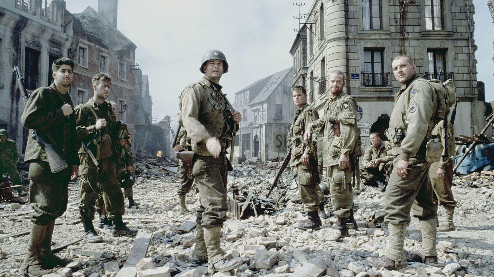
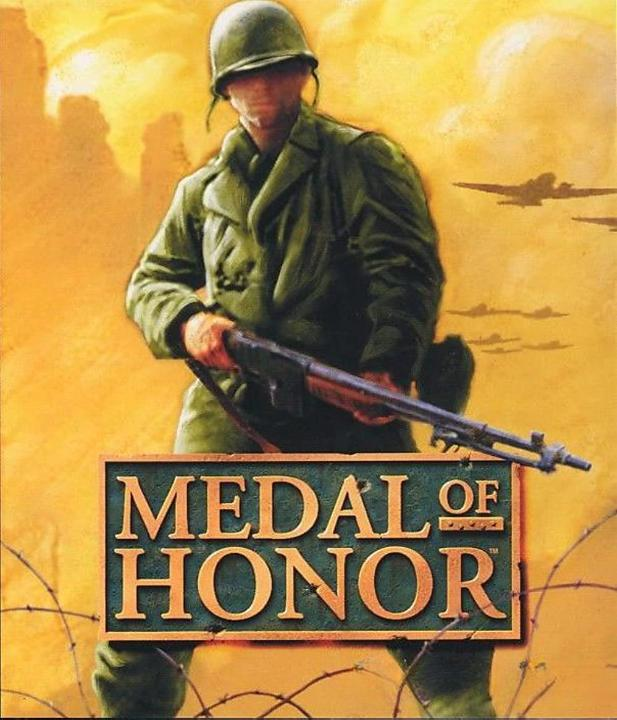

- 1desarrollador:...
- 2año de lanzamiento:....
- 3genero:...

"Rescatando al Soldado Ryan" (1998), dirigida por Steven Spielberg, es un impactante drama bélico ambientado en la Segunda Guerra Mundial. La historia sigue al capitán John Miller (Tom Hanks) y su escuadrón, quienes reciben la misión de encontrar y traer de regreso al soldado James Ryan (Matt Damon), el único sobreviviente de cuatro hermanos que han muerto en combate. La película es famosa por su cruda representación del desembarco en Normandía, con una secuencia inicial brutal y realista en la playa de Omaha. A lo largo del filme, el equipo se enfrenta a dilemas morales y horrores de la guerra mientras buscan a Ryan en territorio enemigo. Rescatando al Soldado Ryan se convirtió en un clásico del cine bélico, ganando múltiples premios, incluido el Oscar a Mejor Director.
- 1director:...
- 2año de lanzamiento:...
- 3reparto:...
Medal of Honor

Medal of Honor es un videojuego de disparos en primera persona desarrollado por DreamWorks Interactive y publicado por Electronic Arts en 1999 para la PlayStation. Ambientado en la Segunda Guerra Mundial, el jugador asume el papel del teniente Jimmy Patterson, un agente de la OSS (Oficina de Servicios Estratégicos) que debe infiltrarse en las líneas enemigas y completar diversas misiones para debilitar el esfuerzo bélico nazi. El juego destacó por su realismo histórico, su narrativa inmersiva y su banda sonora épica compuesta por Michael Giacchino. Fue el inicio de una exitosa franquicia que influyó en el género de los shooters bélicos.